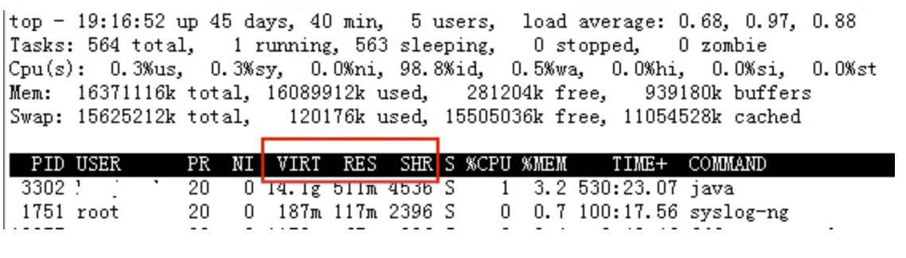
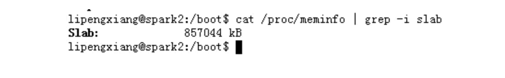
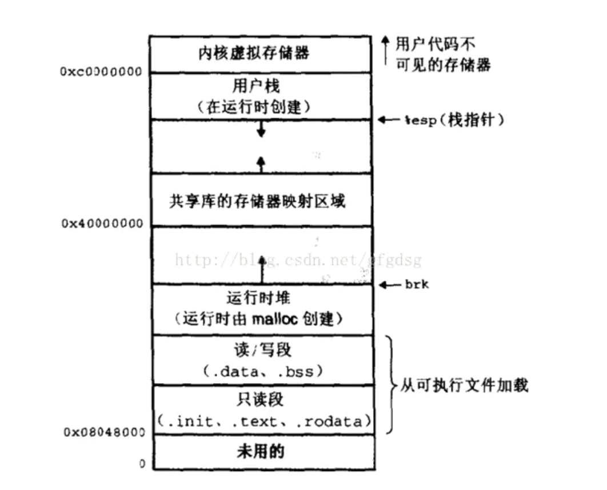
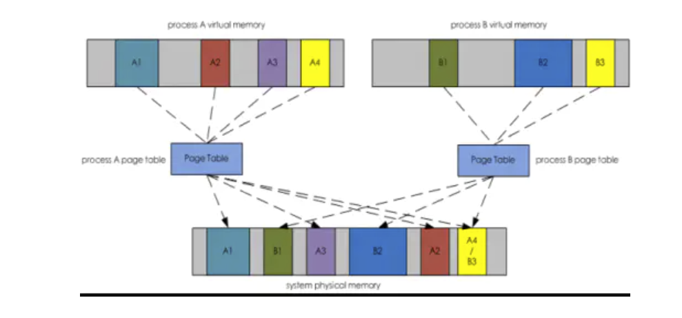

什么是物理/虚拟/共享内存——Linux内存管理小结一
物理内存和虚拟内存到底有什么区别？
提到内存，我们会想到经常接触的三个词：虚拟内存、物理内存、共享内存。它们分别对应top输出中的VIRT、RES、SHR三列。

1. 物理内存
系统的物理内存被划分为许多相同大小的部分，也称作内存页。内存页的大小取决于CPU的架构和操作系统的配置，一般为4KB。物理内存的使用主要分为以下几方面：
（1）内核使用
操作系统启动时，位于/boot目录下的压缩内核文件会被加载到内存中并解压。这部分内容在系统允许期间都会常驻在内存的起始位置。
（2）slab分配器
操作系统的运行还需要更多的空间来分配给管理进程、文件描述符、socket和加载的内和模块等内容。所以内核会通过slab分配器动态分配内存。
PS：slab是Linux操作系统的一种内存分配机制。其工作是针对一些经常分配并释放的对象，如进程描述符等，这些对象的大小一般比较小，如果直接采用brk系统调用来进行分配和释放，不仅会造成大量的碎片，而且也会影响性能。而slab分配器是基于对象进行管理的，相同类型的对象归为一类(如进程描述符就是一类)，每当要申请这样一个对象，slab分配器就从一个slab列表中分配一个这样大小的单元出去，而当要释放时，将其重新保存在该列表中，而不是直接返回给操作系统，从而避免这些出现内存碎片。slab分配器并不丢弃已分配的对象，而是释放并把它们保存在内存中。当以后又要请求新的对象时，就可以从内存直接获取而不用重复初始化。可以在/proc/meminfo中查看当前slab分配器中的内存大小。

（3）进程使用
除去内核使用的部分，所有的进程都需要分配物理内存页给它们的代码、数据和堆栈。进程消耗的这些物理内存被称为“驻留内存”，RSS。
（4）页缓存page cache
除去在内核和进程使用的部分，物理内存剩下的部分被称为页缓存，page cache。因为磁盘io的速度远远低于内存的访问速度，所以为了加快访问磁盘数据的速度，页缓存尽可能的保存着从磁盘读入的数据。page cache中还有一部分称为buffer，它的作用是缓存要写入到磁盘的数据。
页缓存的大小是在一直动态变化的。当系统内存充足时，页缓存会一直增大；当系统free内存不足时，这时如果有进程申请内存，操作系统会从page cache中回收内存页进行分配，如果page cache也已不足，那么系统会将当期驻留在内存中的数据置换到事先配置在磁盘上的swap空间中，然后空出来的这部分内存就可以用来分配了。这就是swap交换。
PS：出现swap交换时，数据被置换到swap空间后(swap out)，该进程使用的内存量下降，在atop等监控工具中的RGROW列为负值，但这并不表示该进程释放了内存，当它需要时，这部分数据又会被换入到内存中(swap in)。另外， swap交换往往会带来磁盘IO的大量消耗，严重影响到系统正常的磁盘io。出现大量的swap交换说明系统已经快要不行了，需要重点关注。
2. 虚拟内存
顾名思义，虚拟内存实际上并不存在，它只是存在于这套巧妙的内存管理机制中。当一个进程启动时，内核会给新的进程建立一个虚拟地址空间。这个虚拟地址空间代表了该进程可能使用到的所有内存，当然它是可以动态变化的。虚拟地址结构示意图如下，从下往上地址增大，主要包括以下几个部分：
（1）代码段：该部分只读，用于存放加载的代码。
（2）数据段：用于存放全局变量和静态变量。
（3）堆：动态内存，当malloc/free申请释放内存小于某个阈值（一般操作系统设定为128K，可以修改）时，通过brk/sbrk系统调用，控制堆顶指针向高地址偏移（malloc）或者低地址偏移（free）。
（4）文件映射区：动态内存，当malloc/free申请释放内存大于128K时，通过mmap系统调用分配一块虚拟地址空间。
（5）栈：用于存放局部变量和进程上下文。

看到这里可能会产生一个疑问：既然都有了物理内存，为什么还要有虚拟内存呢？这是因为由于成本的限制，物理内存往往无法做的很大，但是进程运行阶段所需申请的内存可能远远超过物理内存，并且系统不可能只跑一个进程，会有多个进程一起申请使用内存，如果都直接向物理内存进行申请使用肯定无法满足。通过引入虚拟内存，每个进程都有自己独立的虚拟地址空间，这个空间理论上可以无限大，因为它并不要钱。一个进程同一时刻不可能所有变量数据都会访问到，只需要在访问某部分数据时，把这一块虚拟内存映射到物理内存，其他没有实际访问过的虚拟地址空间并不会占用到物理内存，这样对物理内存的消耗就大大减少了 。
虚拟内存->物理内存的映射机制
系统内核为每个进程都维护了一份从虚拟内存到物理内存的映射表，称为页表。页表根据虚拟地址，查找出锁映射的物理页位置和数据在物理页中的偏移量，便得到了实际需要访问的物理地址。（具体的多级页表实现本文不深入探讨）
如下图所示：

这里还要提到一个概念，驻留内存，这是指虚拟内存中实际映射到物理内存的那部分，也就是进程实际占用的物理内存大小。所以判断一个进程使用的内存大小，主要是看占用的物理内存，也就是驻留内存的大小，即RSS。
3. 共享内存
进程在运行过程中，会加载许多操作系统的动态库，比如 libc.so、libld.so等。这些库对于每个进程而言都是公用的，它们在内存中实际只会加载一份，这部分称为共享内存。如上图中的A4和B3部分即为共享内存，实际都映射到同一块物理内存。
注意，进程占用的共享内存也是计算到驻留内存中的。